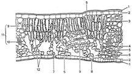

| Objetivo: |
Observar la morfología típica de las células vegetales y la presencia de estomas. Practicar las técnicas de tinción de preparaciones microscópicas.
|
| |
| Introducción: |
| La EPIDERMIS es un tejido formado por una única capa de células unidas entre sí, sin dejar espacios intercelulares. Se encuentra en las hojas, tallo y raíces de las plantas jóvenes. Sus células no poseen cloroplastos y pueden estar engrosadas exteriormente con materiales lipídicos, formando una capa impermeable llamada cutina. Cuando esto es así, la capa de cutina impide el intercambio necesario de agua y gases con la atmósfera, por lo que aparecen, especialmente en el envés de las hojas, unas estructuras denominadas estomas que hacen posible ese intercambio. Los estomas poseen un mecanismo que regula su apertura y cierre.
La epidermis es un tejido protector cuya función es la de proteger al vegetal de la desecación y de la agresión de los agentes externos. En la raíz permite la absorción de agua y sales minerales.
|
|
|
| Desarrollo Experimental: |
|
Experimento 1:
Con ayuda del bisturí y de las pinzas arranca un pequeño trozo de la epidermis de la hoja de lirio, procurando que sea lo más transparente posible, recuerda que las células de la epidermis carecen de cloroplastos. Ten cuidado de no arrancar también parte del parénquima, tejido de color verde, ya que sus células si tienen cloroplastos y que se encuentra por debajo de la epidermis. Si el trozo arrancado es muy grande corta un pequeño cuadrado de 5 mm de lado, que será suficiente.
Coloca sobre una caja de petri dos varillas de vidrio (puente para tinción) y sobre ellas, un portaobjetos y deposita el fragmento en un portaobjetos en el que previamente has echado una gota de agua. Procura que el fragmento de epidermis no se arrugue.
Con el portaobjetos situado encima de la placa de Petri, añade a la muestra unas gotas de colorante verde de metilo acético y espera, más o menos 5 minutos, para que este ejerza su acción.
Transcurrido los cinco minutos, elimina el colorante vertiendo agua sobre la muestra, que habrás sujetado al portaobjetos con ayuda de unas pinzas. El exceso de agua o de colorante que queda en los alrededores de la muestra se seca con un trozo de papel de filtro.
Añade unas 2 ó 3 gotas de agua y con cuidado coloca el cubreobjetos sobre el fragmento de epidermis, cuidando de que no queden burbujas de aire entre el cubre y el portaobjetos.
Observa al microscopio comenzando con el objetivo de menor aumento, para luego ir pasando a otros de mayor aumento.
Dispóngase a realizar el procedimiento para captura de imágenes en microscopia con cámara digital y computadora”
Verificar al microscopio óptico y hacer uso del software para poder visualizar la preparación.
La forma de las células epidérmicas y la de los estomas depende del tipo de planta que estemos estudiando. En ocasiones el ostiolo no se ve por encontrarse cerrado; en estos casos se debe preparar otra muestra utilizando una hoja que esté recién cortada, ya que los ostiolos suelen estar cerrados en las hojas marchitas o bien que llevan mucho tiempo cortadas.
|
| Resultados y Concluciones: |
1) ¿Cuáles son las partes de la célula que observas más claramente?
2) ¿Por qué no se observan otros componentes de la célula?
3) ¿Por qué piensas que debe teñirse la epidermis antes de observarla al microscopio?
4) Las células que ves presentan una membrana fácilmente visible. ¿Se trata de la membrana plasmática o de la pared celular?
5) Con la imagen capturada por la cámara de video señala la membrana, el núcleo, el citoplasma y los estomas. Colorea el núcleo de la célula.
6) ¿Con cuántos aumentos estás observando la imagen?
7) ¿Qué función realizan los estomas?
|
|
|
Figura 1:
Sección Transversal de Una Hoja |
|  |
1.- Cutina.
2.- Epidermis.
3.- Parénquima en empalizada.
4.- Parénquima lagunar.
5.- Espacios intercelulares.
6.- Cámara subestomática.
7.- Células estomáticas con cloroplastos.
8.- Estoma.
9,10 y 11.- Vasos conductores. 1
12.- Cloroplastos. |
|
|